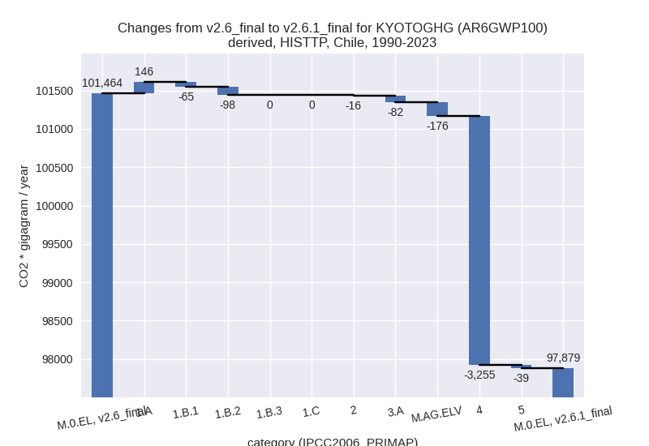
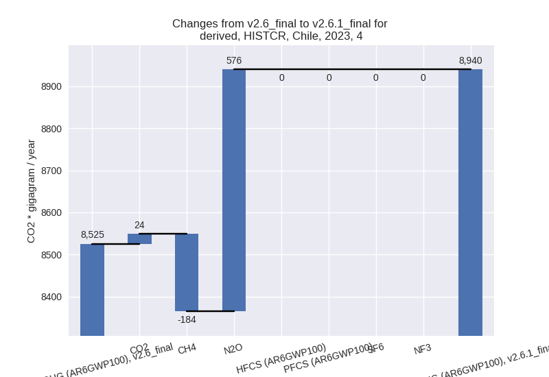

Changes in PRIMAP-hist v2.6.1_final compared to v2.6_final for Chile
2025-03-19
Johannes Gütschow
Change analysis for Chile for PRIMAP-hist v2.6.1_final compared to v2.6_final
Overview over emissions by sector and gas
The following figures show the aggregate national total emissions excluding LULUCF AR6GWP100 for the country reported priority scenario. The dotted linesshow the v2.6_final data.
The following figures show the aggregate national total emissions excluding LULUCF AR6GWP100 for the third party priority scenario. The dotted linesshow the v2.6_final data.
Overview over changes
In the country reported priority scenario we have the following changes for aggregate Kyoto GHG and national total emissions excluding LULUCF (M.0.EL):
- Emissions in 2023 have changed by -3.4%% (-3817.45 Gg CO2 / year)
- Emissions in 1990-2023 have changed by -4.3%% (-3662.59 Gg CO2 / year)
In the third party priority scenario we have the following changes for aggregate Kyoto GHG and national total emissions excluding LULUCF (M.0.EL):
- Emissions in 2023 have changed by -4.4%% (-5610.68 Gg CO2 / year)
- Emissions in 1990-2023 have changed by -3.5%% (-3585.07 Gg CO2 / year)
Most important changes per scenario and time frame
In the country reported priority scenario the following sector-gas combinations have the highest absolute impact on national total KyotoGHG (AR6GWP100) emissions in 2023 (top 5):
- 1: 1.A, CO2 with -2530.48 Gg CO2 / year (-3.2%)
- 2: M.AG.ELV, N2O with -1203.75 Gg CO2 / year (-27.7%)
- 3: 3.A, CH4 with -696.78 Gg CO2 / year (-11.5%)
- 4: 5, N2O with -675.97 Gg CO2 / year (-100.0%)
- 5: 2, HFCS (AR6GWP100) with 672.40 Gg CO2 / year (10.5%)
In the country reported priority scenario the following sector-gas combinations have the highest absolute impact on national total KyotoGHG (AR6GWP100) emissions in 1990-2023 (top 5):
- 1: M.AG.ELV, N2O with -1400.88 Gg CO2 / year (-30.5%)
- 2: 3.A, CH4 with -875.49 Gg CO2 / year (-11.1%)
- 3: 1.A, CO2 with -852.32 Gg CO2 / year (-1.4%)
- 4: 5, N2O with -553.53 Gg CO2 / year (-100.0%)
- 5: 4, CH4 with -426.95 Gg CO2 / year (-9.4%)
In the third party priority scenario the following sector-gas combinations have the highest absolute impact on national total KyotoGHG (AR6GWP100) emissions in 2023 (top 5):
- 1: 4, CH4 with -4259.10 Gg CO2 / year (-28.3%)
- 2: M.AG.ELV, N2O with -533.23 Gg CO2 / year (-12.1%)
- 3: 1.B.1, CO2 with -445.95 Gg CO2 / year (-77.3%)
- 4: 1.B.2, CO2 with 380.75 Gg CO2 / year (inf%)
- 5: 3.A, CH4 with -294.96 Gg CO2 / year (-5.0%)
In the third party priority scenario the following sector-gas combinations have the highest absolute impact on national total KyotoGHG (AR6GWP100) emissions in 1990-2023 (top 5):
- 1: 4, CH4 with -3255.43 Gg CO2 / year (-25.0%)
- 2: 1.B.2, CH4 with -400.18 Gg CO2 / year (-17.7%)
- 3: 1.B.2, CO2 with 302.16 Gg CO2 / year (90.3%)
- 4: M.AG.ELV, N2O with -174.59 Gg CO2 / year (-3.9%)
- 5: 1.A, N2O with 145.34 Gg CO2 / year (20.2%)
Notes on data changes
Here we list notes explaining important emissions changes for the country.
- CRT data from BTR1 covering 1990-2022 has been included. The data
replaces BUR5 data.
- The decrease in 2023 energy CO2 emissions comes from a smaller emissions rebound after 2020 in the CRT data compared to third part dataset.
- Other N2O is included in the country reported data as zero for the first time, thus emissions are now zero instead of following the EDGAR data. Agricultural emissions are much lower (around 30% for N2O in M.AG.ELV and 11% for CH4 in 3.A) in the CRT data compared to the inventory previously used.
- In the TP time-series the main change comes from lower waste CH4 emissions (from EDGAR). Fugitive emissions have in the EDGAR data changed as well.
Changes by sector and gas
For each scenario and time frame the changes are displayed for all individual sectors and all individual gases. In the sector plot we use aggregate Kyoto GHGs in AR6GWP100. In the gas plot we usenational total emissions without LULUCF.
country reported scenario
2023
1990-2023

third party scenario
2023
1990-2023

Detailed changes for the scenarios:
country reported scenario (HISTCR):
Most important changes per time frame
For 2023 the following sector-gas combinations have the highest absolute impact on national total KyotoGHG (AR6GWP100) emissions in 2023 (top 5):
- 1: 1.A, CO2 with -2530.48 Gg CO2 / year (-3.2%)
- 2: M.AG.ELV, N2O with -1203.75 Gg CO2 / year (-27.7%)
- 3: 3.A, CH4 with -696.78 Gg CO2 / year (-11.5%)
- 4: 5, N2O with -675.97 Gg CO2 / year (-100.0%)
- 5: 2, HFCS (AR6GWP100) with 672.40 Gg CO2 / year (10.5%)
For 1990-2023 the following sector-gas combinations have the highest absolute impact on national total KyotoGHG (AR6GWP100) emissions in 1990-2023 (top 5):
- 1: M.AG.ELV, N2O with -1400.88 Gg CO2 / year (-30.5%)
- 2: 3.A, CH4 with -875.49 Gg CO2 / year (-11.1%)
- 3: 1.A, CO2 with -852.32 Gg CO2 / year (-1.4%)
- 4: 5, N2O with -553.53 Gg CO2 / year (-100.0%)
- 5: 4, CH4 with -426.95 Gg CO2 / year (-9.4%)
Changes in the main sectors for aggregate KyotoGHG (AR6GWP100) are
- 1: Total sectoral emissions in 2022 are 84812.04 Gg
CO2 / year which is 75.6% of M.0.EL emissions. 2023 Emissions have
changed by -2.5% (-2016.56 Gg CO2 /
year). 1990-2023 Emissions have changed by -1.2% (-717.69 Gg CO2 / year). For 2023
the changes per gas
are:
The changes come from the following subsectors:- 1.A: Total sectoral emissions in 2022 are 83730.62
Gg CO2 / year which is 98.7% of category 1 emissions. 2023 Emissions
have changed by -2.7% (-2204.00 Gg
CO2 / year). 1990-2023 Emissions have changed by -1.1% (-650.44 Gg CO2 / year). For 2023
the changes per gas
are:
There is no subsector information available in PRIMAP-hist. - 1.B.1: Total sectoral emissions in 2022 are 8.55 Gg
CO2 / year which is 0.0% of category 1 emissions. 2023 Emissions have
changed by inf% (8.57 Gg CO2 /
year). 1990-2023 Emissions have changed by -0.1% (-0.12 Gg CO2 / year). For 2023 the
changes per gas
are:
There is no subsector information available in PRIMAP-hist. - 1.B.2: Total sectoral emissions in 2022 are 1072.87
Gg CO2 / year which is 1.3% of category 1 emissions. 2023 Emissions have
changed by 19.2% (178.86 Gg CO2 /
year). 1990-2023 Emissions have changed by -5.2% (-67.13 Gg CO2 / year). For 2023 the
changes per gas
are:
For 1990-2023 the changes per gas are:
There is no subsector information available in PRIMAP-hist.
- 1.A: Total sectoral emissions in 2022 are 83730.62
Gg CO2 / year which is 98.7% of category 1 emissions. 2023 Emissions
have changed by -2.7% (-2204.00 Gg
CO2 / year). 1990-2023 Emissions have changed by -1.1% (-650.44 Gg CO2 / year). For 2023
the changes per gas
are:
- 2: Total sectoral emissions in 2022 are 9200.25 Gg
CO2 / year which is 8.2% of M.0.EL emissions. 2023 Emissions have
changed by 5.6% (513.11 Gg CO2 /
year). 1990-2023 Emissions have changed by 0.6% (27.77 Gg CO2 / year). For 2023 the
changes per gas
are:
- M.AG: Total sectoral emissions in 2022 are 9285.04
Gg CO2 / year which is 8.3% of M.0.EL emissions. 2023 Emissions have
changed by -17.9% (-2053.39 Gg CO2 /
year). 1990-2023 Emissions have changed by -17.0% (-2271.53 Gg CO2 / year). For 2023
the changes per gas
are:
For 1990-2023 the changes per gas are:
The changes come from the following subsectors:- 3.A: Total sectoral emissions in 2022 are 5511.12
Gg CO2 / year which is 59.4% of category M.AG emissions. 2023 Emissions
have changed by -13.4% (-849.83 Gg
CO2 / year). 1990-2023 Emissions have changed by -11.3% (-912.78 Gg CO2 / year). For 2023
the changes per gas
are:
For 1990-2023 the changes per gas are:
There is no subsector information available in PRIMAP-hist. - M.AG.ELV: Total sectoral emissions in 2022 are
3773.92 Gg CO2 / year which is 40.6% of category M.AG emissions. 2023
Emissions have changed by -23.6%
(-1203.55 Gg CO2 / year). 1990-2023 Emissions have changed by -25.9% (-1358.75 Gg CO2 / year). For 2023
the changes per gas
are:
For 1990-2023 the changes per gas are:
There is no subsector information available in PRIMAP-hist.
- 3.A: Total sectoral emissions in 2022 are 5511.12
Gg CO2 / year which is 59.4% of category M.AG emissions. 2023 Emissions
have changed by -13.4% (-849.83 Gg
CO2 / year). 1990-2023 Emissions have changed by -11.3% (-912.78 Gg CO2 / year). For 2023
the changes per gas
are:
- 4: Total sectoral emissions in 2022 are 8896.74 Gg
CO2 / year which is 7.9% of M.0.EL emissions. 2023 Emissions have
changed by 4.9% (415.36 Gg CO2 /
year). 1990-2023 Emissions have changed by -3.0% (-147.60 Gg CO2 / year). For 2023
the changes per gas
are:

For 1990-2023 the changes per gas are: - 5: Total sectoral emissions in 2022 are 0.00 Gg CO2
/ year which is 0.0% of M.0.EL emissions. 2023 Emissions have changed by
-100.0% (-675.97 Gg CO2 / year).
1990-2023 Emissions have changed by -100.0% (-553.53 Gg CO2 / year). For 2023
the changes per gas
are:
For 1990-2023 the changes per gas are:
third party scenario (HISTTP):
Most important changes per time frame
For 2023 the following sector-gas combinations have the highest absolute impact on national total KyotoGHG (AR6GWP100) emissions in 2023 (top 5):
- 1: 4, CH4 with -4259.10 Gg CO2 / year (-28.3%)
- 2: M.AG.ELV, N2O with -533.23 Gg CO2 / year (-12.1%)
- 3: 1.B.1, CO2 with -445.95 Gg CO2 / year (-77.3%)
- 4: 1.B.2, CO2 with 380.75 Gg CO2 / year (inf%)
- 5: 3.A, CH4 with -294.96 Gg CO2 / year (-5.0%)
For 1990-2023 the following sector-gas combinations have the highest absolute impact on national total KyotoGHG (AR6GWP100) emissions in 1990-2023 (top 5):
- 1: 4, CH4 with -3255.43 Gg CO2 / year (-25.0%)
- 2: 1.B.2, CH4 with -400.18 Gg CO2 / year (-17.7%)
- 3: 1.B.2, CO2 with 302.16 Gg CO2 / year (90.3%)
- 4: M.AG.ELV, N2O with -174.59 Gg CO2 / year (-3.9%)
- 5: 1.A, N2O with 145.34 Gg CO2 / year (20.2%)
Changes in the main sectors for aggregate KyotoGHG (AR6GWP100) are
- 1: Total sectoral emissions in 2022 are 90279.98 Gg CO2 / year which is 71.5% of M.0.EL emissions. 2023 Emissions have changed by -0.4% (-299.01 Gg CO2 / year). 1990-2023 Emissions have changed by -0.0% (-17.07 Gg CO2 / year).
- 2: Total sectoral emissions in 2022 are 13340.56 Gg CO2 / year which is 10.6% of M.0.EL emissions. 2023 Emissions have changed by -0.8% (-121.92 Gg CO2 / year). 1990-2023 Emissions have changed by -0.3% (-16.40 Gg CO2 / year).
- M.AG: Total sectoral emissions in 2022 are 10285.73
Gg CO2 / year which is 8.1% of M.0.EL emissions. 2023 Emissions have
changed by -7.6% (-857.25 Gg CO2 /
year). 1990-2023 Emissions have changed by -2.1% (-257.84 Gg CO2 / year). For 2023
the changes per gas
are:
For 1990-2023 the changes per gas are:
The changes come from the following subsectors:- 3.A: Total sectoral emissions in 2022 are 5936.18
Gg CO2 / year which is 57.7% of category M.AG emissions. 2023 Emissions
have changed by -5.4% (-341.28 Gg
CO2 / year). 1990-2023 Emissions have changed by -1.1% (-82.12 Gg CO2 / year). For 2023 the
changes per gas
are:
There is no subsector information available in PRIMAP-hist. - M.AG.ELV: Total sectoral emissions in 2022 are
4349.55 Gg CO2 / year which is 42.3% of category M.AG emissions. 2023
Emissions have changed by -10.4%
(-515.97 Gg CO2 / year). 1990-2023 Emissions have changed by -3.5% (-175.72 Gg CO2 / year). For 2023
the changes per gas
are:
For 1990-2023 the changes per gas are:
There is no subsector information available in PRIMAP-hist.
- 3.A: Total sectoral emissions in 2022 are 5936.18
Gg CO2 / year which is 57.7% of category M.AG emissions. 2023 Emissions
have changed by -5.4% (-341.28 Gg
CO2 / year). 1990-2023 Emissions have changed by -1.1% (-82.12 Gg CO2 / year). For 2023 the
changes per gas
are:
- 4: Total sectoral emissions in 2022 are 11775.04 Gg
CO2 / year which is 9.3% of M.0.EL emissions. 2023 Emissions have
changed by -26.4% (-4251.38 Gg CO2 /
year). 1990-2023 Emissions have changed by -23.5% (-3254.53 Gg CO2 / year). For 2023
the changes per gas
are:
For 1990-2023 the changes per gas are: - 5: Total sectoral emissions in 2022 are 527.94 Gg
CO2 / year which is 0.4% of M.0.EL emissions. 2023 Emissions have
changed by -12.0% (-81.13 Gg CO2 /
year). 1990-2023 Emissions have changed by -7.1% (-39.23 Gg CO2 / year). For 2023 the
changes per gas
are:
For 1990-2023 the changes per gas are: